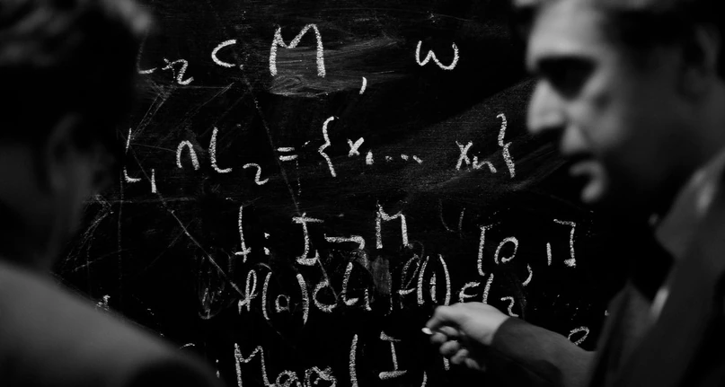
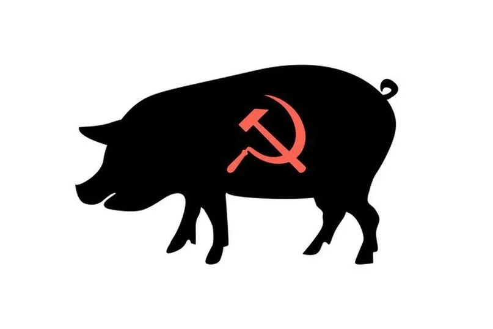

Как не обеднеть за 14 лет съемок и получить респекты от самых влиятельных деятелей искусства, сняв картину в Харькове

«Наташа села на бутылку», «Тесак и его команда били паренька прямо во время съемок!», «Насилие, инцест, БДСМ», — так говорят о нашумевшей кинокартине Ильи Хржановского. Отечественные СМИ уже неделю вещают о «сумасшедшем разврате» в ленте, съемки которой затянулись аж на 14 лет. «Дау» — фильм о тоталитарном режиме и СССР, — снимался по большей части в Харькове (также немного в Лондоне, Москве, Копенгагене и Баку). Для того чтобы киноистория была правдоподобной, в Харькове возвели сцену — институт гиперболизированного конструктивизма и навезли реквизит 1930-х годов (искали по домам и секонд-хендам). Некоторые вещи приобретали, но большую часть жители отдавали безвозмездно.
Изначально картину хотели выпустить в Берлине. Режиссер планировал реконструировать, а потом разрушить Берлинскую стену, на что власти города дали отказ.
Фильм без сценария?
Не совсем. Актеры импровизировали и старались не «борщить». Однако для участников фильма некоторые условия все-таки были: забыть на время съемок актуальные выражения XXI века, сленг и прочую болтовню. Изначально, по задумке, сценарий был — режиссер вдохновился жизнью русского физика Львом Ландау, а точнее мемуарами его жены. Съемки пошли не по плану, и весь проект перерос в некий перформанс. Фильм должен был сниматься не больше пяти лет и длиться три часа, а в итоге снимался 14 и вылился в 700 часов экранного времени. Картина получилась экспериментальной. Актерам было разрешено делать все что угодно, включая акты насилия. Благо актеров «Дау» предупредили о всех исходах и что за ними может следовать.
В картине много символики и сатиры. В паре эпизодов показывают, как ученые издеваются над крысами, вводя инъекции в их тела. Обыватель сказал бы, что режиссер проводит прямую параллель между актерами и братьями нашими меньшими, метафорично намекая, что весь этот цирк подталкивает участников на дикие, животные и инстинктивные действия. Но все гораздо сложнее. Вот что пишет молодежный парижский журнал Trax:
«Пока мы были на премьере на «Дау», мы пили водку и ели из русских фарфоровых тарелок, проникали в двухметровую вагину, на дне которой обнаружились романы Дидро, смотрели на сотни очень реалистичных манекенов, которыми заставлено пространство проекта, увидели, как двое участников команды «Дау» работают в офисе, превращенном в «секс-шоп».

Кинопоказ разрешили три популярнейших парижских театра. В фильме снялась звезда перформанса Марина Абрамович, а саундтрек написал сам Брайан Ино.
У вас еще есть время на то, чтобы попасть на премьеру в Париже, — показы продлятся до 17 февраля. Вам предложат получить «визу», ответив на несколько вопросов, которые помогут составить индивидуальный трип. Надо рассказать о своих сексуальных фантазиях, вкусах и «приписать» себе пару психических расстройств. «Билет-виза» выдается на шесть часов за 35 евро. Сутки проживания в фильме стоят 75 евро, а премьера полностью — 150. Пугающая цифра 700 — столько длится материал, включенный в прокат «Дау digital». Перемотка вперед и назад во время просмотра — невозможна. Создатели фильма понимают, что даже самого закоренелого социопата данный контент может изрядно «покорежить», поэтому заботливо подготовили церковные «исповедальни», только не из дерева, а из зеркал.

Так было ли насилие?
Поражает, что наши СМИ вечно пытаются подкинуть дубовое полено в и так разразившийся костер. Начнем с того, что «Наташа не садилась на бутылку». В «Дау» имеется пара сцен сексуального насилия: директор института развращает секретаршу, а «кэгэбэшник» насилует помощницу бутылкой. Но дело в том, что роли дали девушкам, которые знакомы с БДСМ-практиками. Изначально все актеры подписывали петиции о соглашении на любые ситуации, которые будут происходить на площадке. По факту насилия в «Дау» не было, поскольку здесь нельзя применить термин «эксплуатация».
Создатели не агитировали жертвовать актеров собой и своими ментальными болячками. А все, что делается по воле человека, не считается эксплуатацией. После того как фильмы были смонтированы, актерам давали посмотреть и изучить каждую сцену, чтобы внести свои правки. В случае недовольства артист имел право отказаться от показа фрагмента публике.
Искусства ради
Кажется, только так можно натолкнуть человека на действительно сильные чувства. Разве искусство не рождается из жажды и раздражения: мы способны на сопереживание, только испытывая горе, а негативные ситуации объединяют людей испокон веков. Провокация и мерзость являются важными аспектами современной культуры. Во время просмотра фильма весь зал будто бы погружается в одну эмоциональную волну, говорит французский критик из журнала Le Monde. Не зря знаменитый перформансист — художник из Испании Сантьяго Сьерра — делает проекты, в которых достоинство человека намеренно растаптывается.
Творец заставляет подопечных унижаться за «гроши».

Добровольцами, «топящими» за искусство, становятся люди низких социальных уровней: эмигранты, героиновые наркоманы. Проще говоря, чернь, захваченная современной капиталистической системой. Сьерра лишен наивности и говорит в своих интервью, что искусство не изменит мир, ведь отчасти оно несет за собой экономический и политический подтекст. Творчество XXI века уже вряд ли, как в эпоху Ренессанса, будет пробуждать чистые чувства в человеке. Сейчас эпоха китча, как бы пафосно и модно ни звучало, «постмодерна», где чем жестче и изощреннее будет преподнесен объект искусства, тем «больше классов» оно соберет.

Каков бюджет картины?
Думаю, многих интересует материальная сторона медали. Что не сделаешь «во имя искусства», но за 14 лет съемок так никто и не разорился. Долго скрывалось, кто же основной инвестор картины, им оказался Сергей Адоньев. Он также финансировал такие, проекты как «Электротеатр «Станиславский», идеи Теодора Курентзиса. Наше отечество тоже пыталось «забашлять» на развитие творческого проекта. Тем не менее в 2015 году государство все отсудило до копейки. Видимо, не смогли смириться с реалиями картины. Также в финансировании поучаствовали и европейские кинофонды из Германии, Франции и Швеции.
Главный актер в ленте и есть тот самый Теодор Курентзис. Он является дирижером, чьи проекты финансируются спонсором «Дау». Сам режиссер говорит об актере: «Для меня национальность героя не важна: гений — всегда иностранец». Он должен быть иным, «не в своей тарелке». «Мне изначально было ясно, что этот герой не может быть европейцем, это должен быть представитель культуры другого типа, более древней, чем наша», — продолжает Хржановский.

Данная работа — это не «рековер» исторических событий или эгоцентричная постановка, хоть на то и похоже, а настоящий перформанс, нечто новое для зрителя. Никому уже не привыкать видеть сцены насилия в кино, взять те же фильмы Балабанова. Цикл закончился разрушением института целой группировкой людей во главе с Тесаком. Финал задумывался как апогей линии репрессий и экзистенциального пика. Впрочем, масштаб данной картины невозможно отрицать. «Дау» отражает самовлюбленность режиссера и одновременно является коллективным творением.